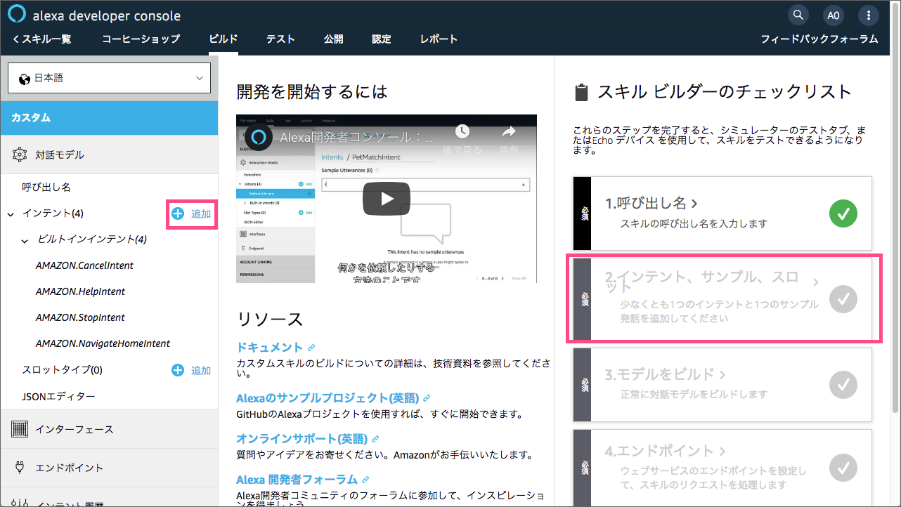
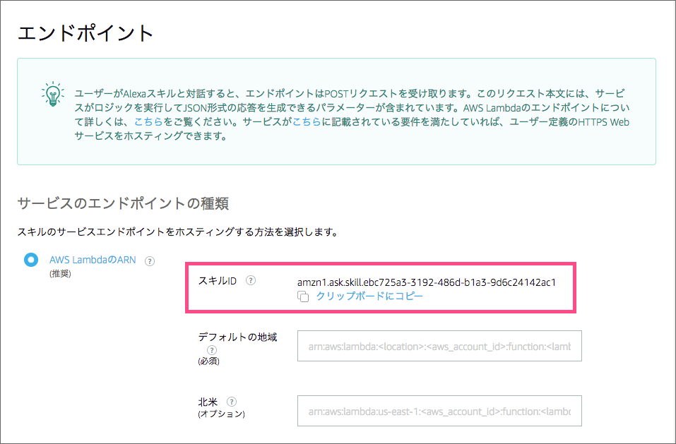
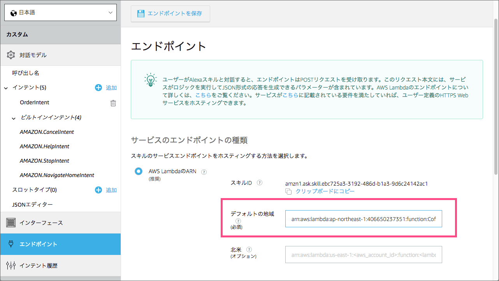
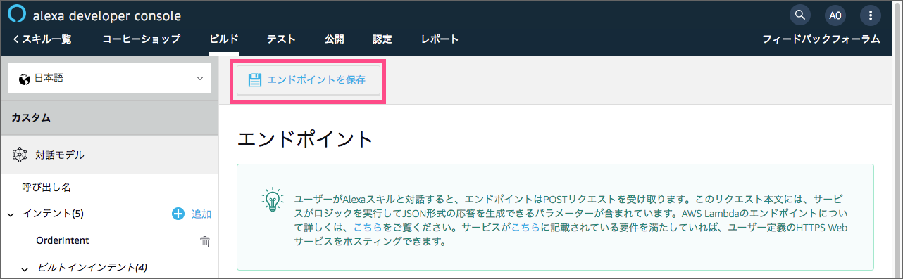
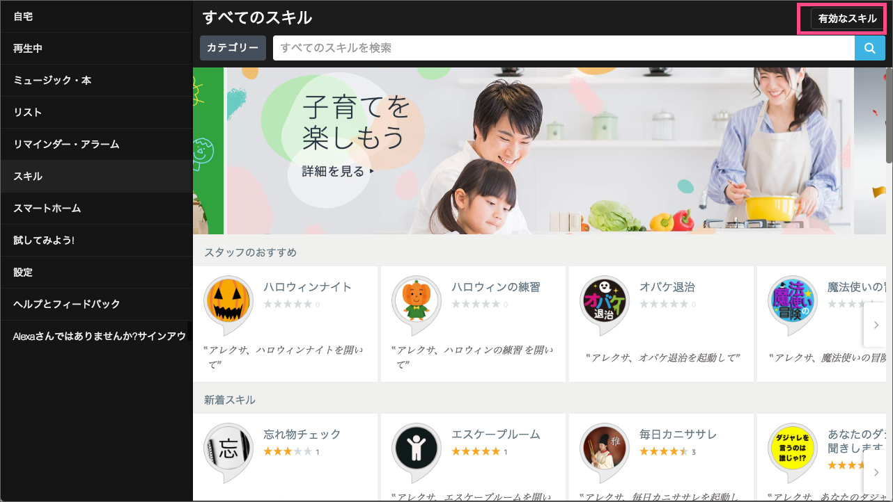
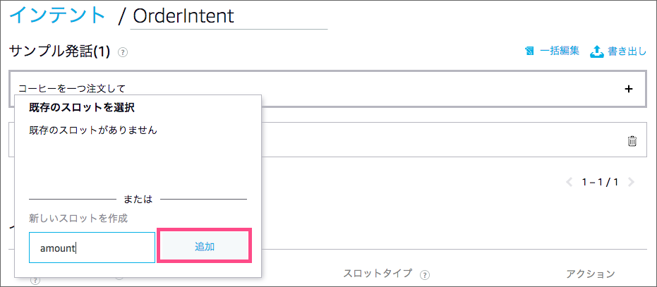
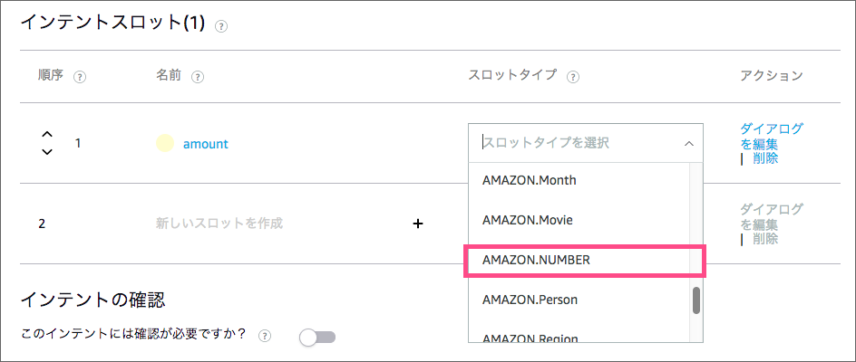
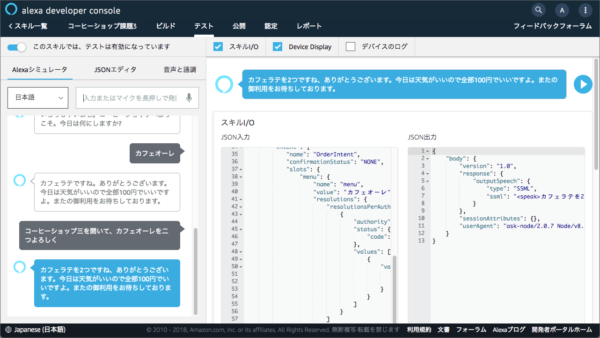
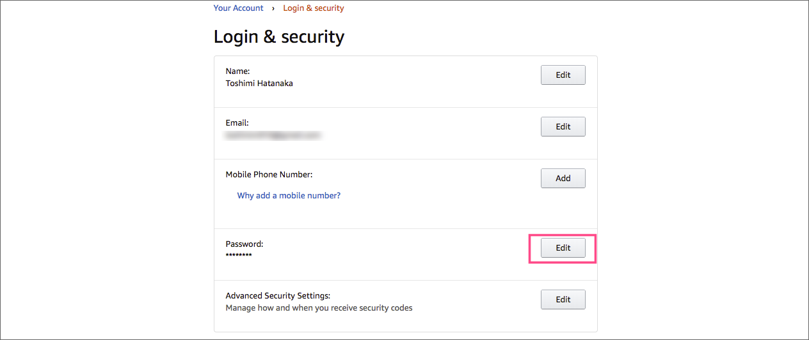

はじめに
この資料は アマゾンジャパン合同会社 が主催する Alexa ハンズオントレーニング のために作成された演習教材です。
所定のレクチャーを受けたあと、この教材のステップに従って実習課題を進めていくことで、スキル開発に必要な基本的な知識とテクニックを習得できるようにデザインされています。
Alexa ハンズオントレーニング は東京、大阪など主要都市で定期的に開催されています。遠方にお住いの方や、まとまった時間が取れない方は、オンラインセミナー Alexa道場 の収録動画をご覧ください。すでにトレーニングに参加された方がご覧になっても、より理解を深めることができるでしょう。
トレーニングの学習目標
このトレーニングを修了すると以下のことができるようになります。
-
簡単なスキルの作成手順を体験することで、スキル開発の基本的なステップを実演できるようになる。
-
簡単なサンプル発話を自分で設計することで、音声インターフェースデザインの基礎を習得することができる。
-
ビルトインスロットタイプ及びカスタムスロットタイプを使ったカスタムスキルを自分で作成できるようになる。
-
セッションアトリビュートを活用したマルチターンのスキルを作成できるようになる。
-
エンドポイントの開発環境として AWS Lambda を使用するメリットを体験することができる。
課題実習の環境要件
この教材の課題を行うには、以下の環境が必要です。
-
インターネットに接続されているパソコン (Windows, Mac, Linux)
-
Firefox または Chrome ブラウザ
| この教材ではAlexaシミュレーターを使ってスキルの動作テストを行います。Amazon EchoをはじめとするAlexa搭載デバイスはなくても構いません。 |
| 管理者権限で利用できるパソコンの利用を推奨します。所属する会社から貸与されているパソコンの場合、厳しいセキュリティ設定のため利用するツールがうまく動作しない場合があります。 |
ASK SDK for Node.js のバージョン
この教材では、Alexa Skills Kit SDK for Node.js Version 2 を使用しています。
Alexa Skills Kit SDK は github.com/alexa からオープンソースとして配布され無料で利用できます。日本語ドキュメントはこちらからアクセスしてください。
ダウンロード
最新版教材のダウンロード
Echoデバイス及びAlexaの進化に伴い、Alexaのスキル開発環境も凄まじいスピードで進化を遂げています。この資料も数週間に一回のペースでアップデートを繰り返しています。これからこの教材を使ってスキル開発の学習を始める場合は、下記のリンクから最新版のPDFをダウンロードしてお使いください。
サンプルコードのダウンロード
この教材では、プログラミング経験がなくてもスキル開発のステップを体験できるように、あらかじめ用意したサンプルコードを利用します。下記のリンクからサンプルコードをダウンロードしておいてください。
サンプルコードはZIP形式の圧縮ファイルになっています。ファイルをダウンロードしたら解凍ツールで解凍してください。
ZIPファイルを解凍すると、SJISまたはUTF-8というフォルダがあります。サンプルコードを開いてコピー＆ペーストする場合は、お使いのパソコンまたはテキストエディタの環境に合わせてどちらかの文字コードのファイルを選択してください。
プログラミング経験について
先に述べたように、この教材はプログラミング経験がなくてもスキル開発を体験できようにデザインされています。しかし、今後独自のスキルを開発するには最低限のプログラミング言語の知識は避けては通れません。
もしこれからスキル開発を始めようとされる方は、以下のような書籍を使ってプログラミングの基礎を学習されることをおすすめします。
特にスキル開発においては、ブラウザの画面を制御するためのJavaScriptではなく、Node.jsについて詳しく解説した書籍を選択した方が良いでしょう。
1. 初めて作るカスタムスキル
この実習ではシンプルなカスタムスキル 「コーヒーショップ」 を作成します。現在のところスキル内で代金を支払う機能を設けることはできませんので、注文した商品を店頭にて作り置きを依頼するためのスキルであると想定して下さい。
1.1. この実習の学習目標
この実習で学んだテクニックを使うと次のようなことができるようになります。
-
スキルビルダーを使って対話モデルを作成することができる。
-
AWS LambdaとASK SDKを使ってエンドポイントのプログラムを作成できる。
-
Alexa シミュレーターを使って作成したスキルをテストできる。
 「アレクサ, コーヒーショップを開いてコーヒーを注文して」
「アレクサ, コーヒーショップを開いてコーヒーを注文して」
 「コーヒーですね、ありがとうございます。今日は天気がいいので全部100円でいいですよ。またのご利用をお待ちしております。」
「コーヒーですね、ありがとうございます。今日は天気がいいので全部100円でいいですよ。またのご利用をお待ちしております。」
|
1.2. 対話モデルのデザイン
このセクションでは最初のステップ、対話モデルのデザインを行います。ユーザーがAlexaに対して何か話したら、Alexaがそれをどのように理解し、どのようなデータをエンドポイント（開発者のプログラムが動作するサーバー）に送るのかを設計します。

| このセクションでは、開発者コンソールを使用します。 |
|
参考ドキュメント
|
1.2.1. 開発者コンソールへのログイン
-
Webブラウザ (Firefox または Chrome )で開発者コンソールへアクセスします。
https://developer.amazon.com/ja/ -
「Developer Console」のリンクをクリックします。
-
ログインページが表示されたら、お手持ちのAmazon.co.jpアカウントでログインします。
-
初めて開発者アカウントを作成する場合でも、ログインするだけで自動的に登録画面に遷移します。Echoデバイスをお持ちの方は、そのデバイスをセットアップした時に使用したアカウントをお使いください。作成したスキルをお手持ちのデバイスでもテストできるので便利です。
-
Amazon.co.jp (日本)と Amazon.com (米国) アカウントの両方をお持ちの方は、それぞれ異なるパスワードを設定し、Amazon.co.jp のアカウントでログインする必要があります。もし同じパスワードを設定している場合は、自動的に Amazon.com のアカウントでUSのスキルを開発することになるのでご注意ください。
-
よくわからない場合はサポートスタッフにお声がけください。
-
-
初めてログインした場合、開発者アカウントの登録画面が表示されます。必要事項を入力してください。
この画面が表示されなかった場合、または英語のインターフェースで表示されてしまった場合は近くのサポートスタッフにお声がけください。

-
利用規約に同意します。
-
収益化についての質問に答えて「保存して続行」ボタンをクリックしてください。今回は全て「いいえ」を選択します。

-
開発者コンソールのTOP画面が表示されると開発者アカウントが正しく作成されています。

1.2.2. スキルの新規作成
-
「Alexa」メニューから「Alexa Skills Kit」をクリックします。
-
「スキル名」の入力とスキルのデフォルト言語を選択します。 スキル名とは、このスキルを公開した際、スキルストアに表示されるスキルの名称です。ここではスキル名を 「コーヒーショップ」 、スキル作成時のデフォルトは 「日本語」 を選択します。
「スキルに追加するモデルの選択」では「カスタム」を選択し「スキルを作成」ボタンをクリックします。
-
スキルビルダーの画面が表示されます。
右側のチェックリストは、この画面では4つの作業ステップあり、全てのステップをクリアすると、次のステップの「テスト」へ進めることを表しています。
チェックリストの手順に従い、「1.呼び出し名」のボックスをクリックします。左側パネルの「カスタム」をクリックするといつでもこの画面に戻ることができます。 -
スキルの呼び出し名を入力します。
このスキルを起動するための呼び出す名を設定します。呼び出し名は2〜50文字である必要があります。ここでは「コーヒーショップ」と入力し「モデルを保存」をクリックします。これで、ユーザーは「アレクサ、コーヒーショップを開いて、◯◯して。」のようにスキルを起動してスキルと会話できるようになります。 画面下の「呼び出し名の要件」は必ず読むようにしてください。使用できない文字や単語などの重要な情報が記載されています。
参考ドキュメント -
左パネルの「カスタム」をクリックし元の画面に戻ります。
-
スキルビルダーのチェックリストの「1.呼び出し名」に緑のチェックが付いていることを確認します。
1.2.3. 対話モデルの作成
対話モデルのデザインに取りかかります。ここでは、ユーザーがどのように発話すれば、どのようにAlexaがその意味を解釈し、その結果をどのようにイベントとしてエンドポイントのサーバーに伝えるべきかをデザインします。これらの入力データは「ビルド」という作業を経てAlexaの学習データとして取り込まれます。
-
スキルビルダーのチェックリストの「2.インテント、サンプル、スロット」のボックスをクリックします。
左パネルの「インテント」の右にある「追加」ボタンをクリックしても同じ画面に遷移します。  -
カスタムインテントの名前を入力します。ここでは OrderIntent と半角英文字で入力し「カスタムインテントを作成」ボタンをクリックします。

OrderIntent のスペルは間違えないよう正確に入力してください。これを間違えると、エンドポイント側で正しい名前のインテントを取得できずエラーになります。
-
インテント OrderIntent に紐づくサンプル発話を入力します。サンプル発話とは、インテントを呼び出すためにユーザーがAlexaに話しかけるフレーズのことです。
ここでは、コーヒーショップのスキルを使ってコーヒーを注文するためのフレーズ「コーヒーを注文して」と入力します。 -
インテントのサンプル発話の入力が完了したら「モデルを保存」をクリックし、最後に「モデルをビルド」ボタンをクリックします。モデルのビルドには1〜2分かかる場合があります。

-
モデルのビルドが完了したら対話モデルの構築は完了です。左側の「カスタム」タブをクリックします。「ビルド」のトップ画面に戻り、スキルビルダーのチェックリストを確認しましょう。「3. モデルをビルド」まで完了し緑のチェックマークがついていればOKです。

-
「4. エンドポイント」 のボックスをクリックします。
-
サービスのエンドポイントの種類では「AWS LambdaのARN」を選択します。
-
「クリップボードにコピー」のリンクをクリックし、スキルIDの文字列をコピーしておきます。この後の処理で必要となりますので、テキストエディタ等を開いてこの文字列を保存しておいてください。

以上で、対話モデルの作業は終了です。ここまでの作業で、Alexaはユーザーの「コーヒーを注文して」という要求フレーズを理解し、エンドポイントのプログラムに OrderIntent というリクエストを送信できるようになります。
次に、リクエスト OrderIntent を受け取る側、つまりエンドポイントのプログラムを書くステップに移ります。
1.3. エンドポイントの開発
OrderIntent を受け取り、何らかの処理をした後、Alexaに応答を返すイベント駆動のサーバープログラムを作成します。サーバーのプラットフォームには、AWSのLambdaというサービスを利用します。スキルのプログラムコードは、Alexaスキル開発用のライブラリ Alexa Skills Kit SDK for Node.js を使って作成します。
| このセクションでは、AWSマネージドコンソールを使用します。 |
1.3.1. AWSコンソールへのログイン
-
以下のリンクからAWSポータルにアクセスします。
-
「コンソールへログイン」をクリックします。

-
AWSアカウントIDを入力します。
AWSアカウントは無料で作成できますが、クレジットカードの登録が必要になります。どうしてもアカウントの作成が難しい場合はサポートスタッフにご相談ください。

-
パスワードを入力し、ログインします。
本来はセキュリティ上の理由からルートユーザーでのログインは推奨されません。通常はIAMで開発用ユーザーを追加し、開発用ユーザーでログインし直して作業を行ってください。

-
Lambdaを選択してクリックします。Lambdaが表示されていない場合は、上の検索ボックスに Lambda と入力すると表示されます。Lambdaはコンピューティングのカテゴリにあります。

-
右上のリージョンを「アジアパシフィック（東京）」に変更し、「関数の作成」ボタンをクリックしてください。
2018年10月時点でAlexaに接続できるリージョンは、「米国東部(バージニア北部)」「米国西部(オレゴン)」「EU(アイルランド)」「アジアパシフィック(東京)」の４つとなっています。これ以外のリージョンでは、Alexaに接続できなくなるので注意してください。

-
「一から作成」を選択し、名前欄に「CoffeeShop」と入力します。ランタイムのバージョンを「Node.js 8.10」に変更し、「ロール」のプルダウンメニューから「テンプレートから新しいロールの作成」を選択してください。ロール名には適当な名前をつけてください。（例：AlexaRole など）
-
ポリシーテンプレートは、「シンプルなマイクロサービスのアクセス権限」を選択してください。
今回は Amazon CloudWatch Logsと Amazon DynamoDBにアクセスできるシンプルなロールテンプレートを選択します。S3など他のサービスにアクセスしたい場合は、適切なロールを追加してください。
-
下図のようになっていればOKです。画面下にある「関数の作成」ボタンをクリックしてください。

-
関数が作成されると次のような画面になります。

1.3.2. トリガーを追加する
Lambda関数は様々なサービスと接続し呼びだすことができます。トリガーとは、作成した関数が何によって呼び出されるかを指定します。ここでは Alexa Skills Kit を指定します。
-
画面左「トリガーの追加」から Alexa Skills Kit をクリックします。

-
Alexa Skills Kit が追加されると下のような表示になります。
-
トリガーの設定では、スキルIDを検証を「有効」に設定し、アプリケーションIDのテキスト入力フィールドに、[対話モデルの作成]のステップ7でコピーしておいたスキルIDを貼り付け、「追加」ボタンをクリックしてください。
スキルIDの検証を「有効」にすることで、このLambda関数が、意図しない他のAlexaスキルから呼び出されないよう制限することができます。
-
「保存」をクリックしてください。

1.3.3. Lambda関数のコードをアップロードする
-
Designer パネルの中に表示されている「CoffeeShop」と書かれたLambdaのアイコンをクリックしてください。

-
画面の下方に関数のコードエディタが表示されます。左上のコードエントリタイプのプルダウンメニューから「.ZIPファイルをアップロード」を選択してください。

-
「アップロード」ボタンをクリックしてください。
-
解凍したサンプルファイルのフォルダの中から、Coffeeshop.zip ファイルを探し選択してください。
ソースコードとライブラリを含めたZIPファイルの作り方は、以下のSK SDK v2 for Node.js のドキュメントを参照してください。 Setting Up The ASK SDK
-
画面右上の「保存」ボタンをクリックします。

-
課題1のサンプルコードが読み込まれた状態でコードエディタが開きます。ここではデフォルトで呼び出されるコード index.js と ASK-SDK のライブラリ ask-sdk-core および ask-sdk-model もデプロイされていることが確認できます。

-
画面右上に表示されている、ARNをクリップボードにコピーしておきます。
コピーする文字列は、以下のような形式になります。
arn:aws:lambda:ap-northeast-1:XXXXXXXXX:function:coffeeshop
これが、Alexa からLambda関数を呼び出すエンドポイントのアドレスになります。この文字列が間違っていると目的のエンドポイントが見つからない、または別のエンドポイントに接続され、エラーとなるので注意してください。
次のセクションでは、ステップ(1)で作成した対話モデルに、このセクションで作成したエンドポイントのLambda関数を登録します。
1.4. エンドポイントを登録する

対話モデルに、Lambda関数で作ったエンドポイントを登録し、Alexaから適切にLambda関数を呼び出せるようにします。
| このセクションでは開発者コンソールを使用します。 |
-
スキルビルダーの「カスタム」の画面に戻り、スキルビルダーのチェックリストから「4.エンドポイント」をクリックします。
左パネルの「エンドポイント」をクリックしても同じです。 
-
サービスのエンドポイントをホスティングする方法は「AWS LambdaのARN」を選択します。「デフォルトの地域」のテキストボックスに先ほどコピーしておいたLambda関数のARNを貼り付けてください。その他の項目はデフォルトのままにしてください。
 -
「エンドポイントの保存」ボタンをクリックします。

以上で、音声ユーザーインターフェースにエンドポイントを登録する作業が完了しました。簡単ですね？
これでスキルはほぼ完成に近づきました。次のステップでは、あなたのスキルが正しく動作するかテストしてみましょう。
1.5. テストする

この段階で、あなたのスキルはほぼ出来上がっています。正しく動作するかどうかテストしてみましょう。もしうまく動作しなかった場合は、どこかの設定が間違っているのかもしれません。ステップ(1)から(3)に戻り、再確認しましょう。
| このセクションでは開発者コンソールを使用します。 |
|
参考ドキュメント
|
1.5.1. Alexaシミュレータでテストする
-
「テスト」タブを開きます。テストが無効になっている場合はスイッチをクリックしてテストを有効に変更します。
-
Alexaシミュレータを使って、スキルのテストをしましょう。言語が日本語になっていることを確認し、その隣のテキストボックスにAlexaに話しかけるフレーズをテキストで入力し[Enter]キーを押します。
リスト 1. 入力例（ウェイクワードは省略することができます）コーヒーショップを開いてコーヒーを注文して
もしくは下図のマイクのアイコンをクリックした状態で、同様のフレーズをパソコンのマイクに向かって声で話しかけます。

-
画面左側のパネルには、Alexaに送ったユーザーの発話と、Alexaからの応答メッセージが会話形式で表示されます。右側のパネルには、Alexa からスキルに送信されたJSONデータ (JSON入力) と、スキルからAlexaに送信されたJSONデータ (JSON出力) の中身を確認することができます。
-
JSON入力の中から、どのようなインテントが送られてきているかを確認しましょう。
-
JSON出力の中から
"outputSpeech":{"ssml": <speech> …の文字列を探してみてください。レスポンスのJSONデータの中にAlexaが読み上げるテキストが埋め込まれていることがわかります。上部の右側の再生ボタンをクリックすると、Alexaが読み上げる音声を何度も再生することができます。
1.5.2. （オプション）Echoデバイスでテストする。
お手持ちのEchoデバイスを使ってテストする手順を説明します。はじめに、Alexaアプリのスキル一覧ページに開発中のスキルが表示されているかどうかを確認します。
| ここではAlexaアプリを使用します。(https://alexa.amazon.co.jp) |
| まだ１台も自分のアカウントでEchoデバイスをセットアップしたことがない場合、Alexaアプリにログインするとデバイスのセットアップ画面が表示され、自分のスキルを確認することはできません。 |
-
Alexaアプリにログインし「スキル」タブをクリックします。
-
「有効なスキル」をクリックします。
 -
「開発スキル」のタブをクリックします。
現在開発中（非公開）のスキルのリストが表示されます。リストの中から、あなたが作成した「コーヒーショップ」スキルを探してください。アイコンの右下に緑色の devJP というマークのついたものが開発中のスキルを表しています。
-
スキルが有効になっていれば、開発者アカウントと同じアカウントでセットアップされているAlexa対応デバイス（Amazon Echoなど）でもテストすることができます。

-
もし、手元にAlexa対応デバイスがある場合は、それを使って動作テストをしてみてください。スキルを起動する際は、スキルの呼び出し名を忘れずに！
リスト 2. 呼び出しフレーズアレクサ、コーヒーショップを開いてコーヒーを注文して」
スキル開発の基本ステップは以上です。初めて作成したスキルは動きましたか？
1.5.3. うまく動かない場合
うまく動かない場合、様々な要因がありますが特に以下の設定を見直してみましょう。
-
スキルビルダーのチェックリストは全て緑のアイコンに変わっていますか？
-
スキルビルダー側に登録したエンドポイントのARNは正しいですか？
-
スキルビルダーで追加したインテント名のスペルと、Lambda関数で登録されているインテント名のスペルは一致していますか？
-
Alexaシミュレーターで、音声を使ってスキルを起動した際の「呼び出し名」の認識文字列と、スキルビルダーで設定した「呼び出し名」は完全に一致していますか？
1.5.4. 「スキルからの応答に問題があります」？
Alexaが上記のフレーズを言って期待する動作をしない場合、Lambdaのコード内で何らかのエラーが発生し正しくレスポンスを返していない状態です。Lambda側で何が起きているのか CloudWatchLog を使ってエラーシューティングを行ってみましょう。
-
Lambda関数の編集画面を開き、「モニタリング」をクリックします。
-
CloudWatchメトリクスの画面が開きます。「呼び出しカウント」の枠内にある「ログにジャンプ」をクリックします。

-
CloudWatchのログ画面が開きます。下に行くほど新しいログが表示されます。何らかのエラーが起こっている行を探します。フィルター機能を使って Error 等の文字列で検索しても良いでしょう。

-
エラーを見つけたら、メッセージを読みLambda関数内のエラー箇所を修正します。
-
修正したら再びAlexaシミュレーターでテストをしましょう。正しく動作するまでこのデバッグ作業を繰り返します。根気よく頑張りましょう！
2. インテントの追加
2.1. この実習の学習目標
この実習では、ユーザーがコーヒーの注文とは関係のない発話をしてきた場合の受け取り方法と、ビルトイン・インテントの実装方法を学びます。
この実習で学んだテクニックを使うと次のようなことができるようになります。
-
インテントとは何かを説明できるようになる。
-
任意のインテントと、インテントハンドラーを追加することができる。
-
ビルトイン・インテントの追加と実装方法を実演できるようになる。
2.2. 対話モデルの編集
 「アレクサ、コーヒーショップを開いて、おすすめは何？」
「アレクサ、コーヒーショップを開いて、おすすめは何？」
 「今日は甘さスッキリのカフェラテがおすすめです。」
「今日は甘さスッキリのカフェラテがおすすめです。」
|
参考ドキュメント
|
2.2.1. インテントを追加する
-
コーヒーショップスキルのスキルビルダーの画面を開きます。
-
左パネルにあるインテントの「追加」ボタンをクリックします。
-
ユーザーの「おすすめは何？」という発話に対応するカスタムインテントを作成します。インテント名の入力フィールドに「RecommendIntent」と入力し、「カスタムインテントの作成」ボタンをクリックします。
-
インテント「RecommendIntent」に紐づくサンプル発話を2〜3フレーズ考えて入力し、「モデルを保存」ボタンをクリックします。
サンプル発話を入力する際、疑問符(?)、英数文字、記号などは入力しないでください。 -
続いて、左パネルのインテントのグループに「ビルトインインテント(3)」が含まれていることを確認します。AMAZON.HelpIntent をクリックします。
-
同様に、AMAZON.CancelIntent、AMAZON.StopIntent があることも確認します。これらは、スキル作成時にデフォルトで追加されているビルトイン・インテントです。対話モデルでは、特に何もする必要はありませんが、必要に応じて独自のサンプル発話を追加することもできます。一方、これらのインテントを受け取るLambdaのコードは必ず実装する必要があります。
2.2.2. LambdaでRecommendIntent インテントハンドラーを追加する
| プログラミングに自信のない方は、Lambdaの index.js のコードをサンプルファイル [Sample2.js] のコードに置き換えてください。 |
-
AWSコンソール画面を開き、CoffeeshopスキルのLambda関数コード index.js を開きます。
-
OrderIntentHandlerが定義されているブロックをコピーし、「// この下に RecomentIntentHandlerのコードを追加してください。」と書かれているコメント行の下に貼り付け、以下のようにハンドラー名(RecommendIntent)、canHandle内のインテント名(RecommendIntent)、speechOutputに代入されている文字列を修正します。
リスト 3. OrderIntentをコピーして追加修正したRecommendIntentのコードconst RecommendIntentHandler = { canHandle(handlerInput) { return handlerInput.requestEnvelope.request.type === 'IntentRequest' && handlerInput.requestEnvelope.request.intent.name === 'RecommendIntent'; }, handle(handlerInput) { const speechOutput = '今日は甘さスッキリのカフェラテがおすすめです。'; return handlerInput.responseBuilder .speak(speechOutput) .getResponse(); } }; -
インテントハンドラーを追加したら、コードの下方に定義されている SkillBuilderオブジェクトに、先ほど追加したRecommendIntentHandlerを登録します。
const skillBuilder = Alexa.SkillBuilders.custom(); exports.handler = skillBuilder .addRequestHandlers( LaunchRequestHandler, OrderIntentHandler, // ここにRecommendIntentHandlerを追加登録してください。 RecommendIntentHandler, //<= 追加 // ここにHelpIntentHandlerを追加登録してください。 CancelAndStopIntentHandler, SessionEndedRequestHandler ) .addErrorHandlers(ErrorHandler) .lambda(); -
同様の手順でビルトインインテントAMAZON.HelpIntentを処理するHelpIntentHandlerを定義します。以下のコードを RecommendIntent の下に追加します。
const HelpIntentHandler = { canHandle(handlerInput) { return handlerInput.requestEnvelope.request.type === 'IntentRequest' && handlerInput.requestEnvelope.request.intent.name === 'AMAZON.HelpIntent'; }, handle(handlerInput) { const speechOutput = 'コーヒーショップです。挽きたての美味しいコーヒーをお届けしています。今日は何にしますか?'; const reprompt = '今日は何にしますか？'; return handlerInput.responseBuilder .speak(speechOutput) .reprompt(reprompt) .getResponse(); } };OrderIntentHandler, RecommendIntentHandlerと異なり、レスポンスを返す処理の記述に、.reprompt(文字列) が追加されていることに注目してください。AMAZON.HelpIntentは、ユーザーが使い方を尋ねてきた場合のインテントです。 スキルは、スキルの使い方を簡潔に伝えた後、次にどうするかをユーザーに尋ね返事待ちの状態にする必要があります。.reprompt(文字列) の行を追加すると、はじめに .speak(文字列) の文字列を話した後、Alexaはユーザーからの応答待ちになります（ブルーのリングライトが回転します）。8秒間ユーザーの応答がなかった場合、Alexaは.reprompt(文字列) の文字列の内容を話し、さらにユーザーからの応答を待ちます。それでもユーザーからの応答がなかった場合、スキルは終了します。 -
インテントハンドラーを追加したので、コードの下方に定義されている SkillBuilderオブジェクトに、HelpIntentHandlerを登録します。
const skillBuilder = Alexa.SkillBuilders.custom(); exports.handler = skillBuilder .addRequestHandlers( LaunchRequestHandler, OrderIntentHandler, // ここにRecommendIntentHandlerを追加登録してください。 RecommendIntentHandler, // ここにHelpIntentHandlerを追加登録してください。 HelpIntentHandler, // <== 追加 CancelAndStopIntentHandler, SessionEndedRequestHandler ) .addErrorHandlers(ErrorHandler) .lambda();skillBuilerオブジェクトにハンドラーを登録する際の順番に注意してください。SDKは、登録された順にハンドラーの canHandle() をチェックし、最初に True を返したハンドラーの handle()を実行します。
2.3. テストする
対話モデル及びLambda関数の修正が終わったらスロットの値が正しく取得できるかどうかテストしましょう。
-
Alexaシミュレータを開き、「
コーヒーショップを開いて、おすすめは何」のように発話を入力してテストしてみましょう。 -
次に「
コーヒーショップを開いて」だけでスキルを起動してみましょう。インテントタイプ LaunchRequest が送信され、LaunchRequestHandler が実行され、ユーザーからの返答待ちになることを確認しましょう。 -
そのままの状態で、Alexaに「
ヘルプ」と言ってみましょう。AMAZON.HelpIntent が受信され、HelpIntentHandler が実行されることを確認してください。
以上のような手順で、インテントを追加するごとにインテントハンドラーを定義してskillBuilderオブジェクトに追加登録するのが ASK SDK for Node.js の基本パターンとなります。
ただし、サンプルコードのCancelAndStopIntentHandlerのように、インテントが異なっていても、処理の内容や応答が同じ場合には、１つのインテントハンドラーに処理をまとめることもできます。
| 必ずしも、インテント:インテントハンドラーは1:1である必要はない。 |
const CancelAndStopIntentHandler = {
canHandle(handlerInput) {
return handlerInput.requestEnvelope.request.type === 'IntentRequest'
&& (handlerInput.requestEnvelope.request.intent.name === 'AMAZON.CancelIntent'
|| handlerInput.requestEnvelope.request.intent.name === 'AMAZON.StopIntent');
},
handle(handlerInput) {
const speechOutput = 'コーヒーショップをご利用ありがとうございました。';
return handlerInput.responseBuilder
.speak(speechOutput)
.getResponse();
}
};3. スロットの使用
3.1. この実習の学習目標
この実習ではユーザーの発話から ドリンクのメニュー と ドリンクの数 の情報を受け取るようにスキルを改良します。
この実習で学んだテクニックを使うと次のようなことができるようになります。
-
対話モデルのサンプル発話にスロットを導入する手順を実演できる
-
標準スロットタイプとカスタムスロットタイプを使い分けることができる。
-
スロットで受け取ったデータがどのようにエンドポイントに渡されるかを説明できる。
3.2. 対話モデルの編集
 「アレクサ、コーヒーショップを開いて、カフェラテを二つください」
「アレクサ、コーヒーショップを開いて、カフェラテを二つください」
 「カフェラテを2つですね、ありがとうございます。今日は天気がいいので全部100円でいいですよ。またのご利用をお待ちしております。」
「カフェラテを2つですね、ありがとうございます。今日は天気がいいので全部100円でいいですよ。またのご利用をお待ちしております。」
|
3.2.1. スロットを追加する
-
開発者コンソールに戻りスキルビルダーを開きます。
-
インテント「OrderIntent」をクリックします。
-
スロットを含むサンプル発話を追加します。まず「コーヒーを一つ注文して」と入力します。
-
スロットにしたい部分「一」（漢数字の1）マウスで選択します。下図のようなスロットを追加するポップアップが表示されます。
-
新しいスロットを作成のテキストフィールドに、追加したいスロット名「amount」を入力しましょう。スロット名は必ず半角英文字で入力します。入力したら「追加」ボタンをクリックします。
 -
スロットを含むサンプル発話に置き換えられています。＋ボタンか、リターンキーを押して確定します。
-
画面の下の方を見ると、インテントスロットにamountが追加されていることが確認できます。amountのスロットタイプを設定しましょう。この場合「数値」を取得するので、標準スロットタイプのAMAZON.NUMBERを選択します。
=== カスタムスロットタイプを追加する
-
左のパネルからスロットタイプの「追加」ボタンをクリックします。
-
カスタムスロットタイプ名を MenuList にして、「カスタムスロットタイプを作成」ボタンをクリックします。

-
スロット値を入力する画面が開きます。コーヒーショップで選択できるメニュー品目のリストを追加します。ここでは「コーヒー」「カフェオレ」「カプチーノ」「エスプレッソ」の4つを追加しましょう。追加が終わったら「モデルを保存」ボタンをクリックしておきます。
-
インテント OrderIntentの編集画面を表示し、既に登録されているサンプル発話の「コーヒー」と書かれている部分をマウスで選択します。

-
新しいスロットを作成のテキストフィールドに、追加するスロット名menuを入力し、「追加」ボタンをクリックします。
-
下方のインテントスロットを確認します。2行目を1クリックすると新しいスロットmenuが表示されます。スロットmenuのスロットタイプ MenuList をスロットタイプのリストから選択します。
-
他の既存のサンプル発話の「コーヒー」の部分もスロットmenuに置き換えます。

-
全ての「コーヒー」をスロットmenuに置き換えたら、「モデルを保存」ボタンと「モデルをビルド」ボタンを順にクリックしましょう。

以上で、対話モデルの修正は完了です。次にLambda関数の修正に移りましょう。
3.3. Lambdaのコードを改良する
スロットmenuの値を受け取れるようにLambda側のプログラムコードも修正しましょう。
| プログラミングに自信のない方は、Lambdaの index.js のコードをサンプルファイル [Sample3.js] のコードに置き換えてください。 |
var amount = handlerInput.requestEnvelope.request.intent.slots.amount.value;
var menu = handlerInput.requestEnvelope.request.intent.slots.menu.value;
const speechOutput = menu + 'を' + amount + 'つですね、ありがとうございます。今日は天気がいいので全部100円でいいですよ。またの御利用をお待ちしております。';
return handlerInput.responseBuilder
.speak(speechOutput)
.getResponse();Lambda関数のコードの修正が完了したら「保存」ボタンをクリックしてテストしましょう。
3.4. テストする
対話モデル及びLambda関数の修正が終わったらスロットの値が正しく取得できるかどうかテストしましょう。
-
Alexaシミュレータを開き、「
コーヒーショップを開いて、コーヒーを一つ注文して」のようにスロットを含めた発話を入力してテストしてみましょう。このとき、スロットに数字を入れる場合は、漢数字で入れてください。半角や全角の数字はうまく認識しないので注意してください。タイプ入力だけではなく、音声入力でもテストを繰り返し、スロットの値が正しく取得できているかを確認しましょう。 -
JSON入力で、スロットの値が正しく取得できているかどうかを観察します。下図のようにスロット名 menu にユーザーが発話したメニューの名前（下図の場合は コーヒー）、 amount に数（下図の場合は数字の 2 ）が入ることを確認します。
-
JSON出力側も正しく数字の入った応答を返しているかを確認しましょう。
4. 発話のバリエーション
4.1. この実習の学習目標
この実習では、ユーザーの様々な発話パターンをAlexaが正しく認識できるように改良するテクニックを学びます。
この実習で学んだテクニックを使うと次のようなことができるようになります。
-
対話モデルのインテントに適切な数のサンプル発話を追加して、ユーザーの発話の認識率を向上させることができる。
-
スロットに同義語（シノニム）を追加して、同じ意味をもつ別の言い方にも対応できるように改良できる。
4.2. 対話モデルの編集
 「アレクサ、コーヒーショップで、冷たいコーヒーを一つ頼む」
「アレクサ、コーヒーショップで、冷たいコーヒーを一つ頼む」
 「冷たいコーヒーを1つですね。ありがとうございます。今日は天気がいいので全部100円でいいですよ。またの御利用をお待ちしております。」
「冷たいコーヒーを1つですね。ありがとうございます。今日は天気がいいので全部100円でいいですよ。またの御利用をお待ちしております。」
 「アレクサ、コーヒーショップを開いて、カフェラテをください」
「アレクサ、コーヒーショップを開いて、カフェラテをください」
 「カフェラテですね。ありがとうございます。今日は天気がいいので全部100円でいいですよ。またの御利用をお待ちしております。」
「カフェラテですね。ありがとうございます。今日は天気がいいので全部100円でいいですよ。またの御利用をお待ちしております。」
4.2.1. インテントのサンプル発話を追加する
インテントに対するユーザーの発話パターンは一つとは限りません。同じ内容のことを話す場合でも、人によって様々な言い回しをします。住む地域によっては方言もあるでしょう。これら発話の多様性に対応できるようスキルを改良しましょう。
-
開発者コンソールのスキルビルダーを開きます。
-
インテント「OrderIntent」をクリックして、サンプル発話を追加します。言葉の揺れ、異なる言い回し、方言なども考慮すると良いでしょう。また、全てのスロットが含まれる場合、一部のスロットしか含まれない場合、スロットが全く含まれない場合、スロットの順番が異なる場合など、あらゆる発話パターンを想定し、できるだけ多く入力します。
サンプル発話に入力したフレーズは、Alexaの機械学習の教師データとして登録されます。サンプル発話の数が多ければ多いほど、認識率が向上します。 -
同様に、インテント「RecommendIntent」をクリックして、サンプル発話を追加します。
-
対話モデルを修正したら対話モデルを保存し、ビルドします。
-
AlexaシミュレーターまたはAlexa対応デバイスでテストをします。
4.2.2. 同義語（シノニム）を追加する
同じ意味を持つ言葉でも様々なフレーズを使います。例えば「アイスコーヒー」のことを「冷たいコーヒー」という人もいるでしょう。「カフェオレ」という人もいれば「カフェオーレ」という人もいるでしょう。こうした言葉の揺れはスロット値の取得に影響を及ぼします。異なるフレーズでも同じスロット値として取り扱いたい場合には、シノニムの機能を使うと便利です。
ここでは、既に登録済みの MenuList スロットタイプの各値にシノニムを追加しましょう。
-
開発者コンソールのスキルビルダーを開きます。
-
左パネルの「スロットタイプ」から MenuList をクリックします。
-
既に登録されているドリンクメニューの名前に対し、それぞれ別の言い回しを追加します。
-
プログラムコードで処理しやすいように各スロット値に固有のIdを付与することもできます。Idは任意で入力します。
-
対話モデルを修正したら対話モデルを保存し、ビルドします。
-
AlexaシミュレーターまたはAlexa対応デバイスでテストをします。
4.3. Lambdaのコードを改良する
| プログラミングに自信のない方は、Lambdaの index.js のコードをサンプルファイル [Sample4.js] のコードに置き換えてください。 |
4.3.1. スロット値の有無によって応答を変える
例えば OrderIntent に注目した場合、ユーザーは必ずしもメニューと個数を言ってくれるとは限りません。もし発話の中でスロット値が提供されなかった場合、リクエストデータにはそのスロット値は含まれず、Node.js のスロット変数の値は undefined となります。
コードの中ではこのような場合のエラー処理も考慮する必要があります。例えば下のようにコードを修正します。
const OrderIntentHandler = {
canHandle(handlerInput) {
return handlerInput.requestEnvelope.request.type === 'IntentRequest'
&& handlerInput.requestEnvelope.request.intent.name === 'OrderIntent';
},
handle(handlerInput) {
var amount = handlerInput.requestEnvelope.request.intent.slots.amount.value;
var menu = handlerInput.requestEnvelope.request.intent.slots.menu.value;
if (menu == undefined){
// ユーザーがメニューを言わなかった場合
const speechOutput = 'コーヒー、カフェラテ、カプチーノからお選びいただけます。どれにしますか？';
const reprompt = '何にしますか？';
return handlerInput.responseBuilder
.speak(speechOutput)
.reprompt(reprompt)
.getResponse();
} else if(amount === undefined){
// ユーザーが数量を言わなかった場合
const speechOutput = menu + 'ですね。ありがとうございます。今日は天気がいいので全部100円でいいですよ。またの御利用をお待ちしております。';
return handlerInput.responseBuilder
.speak(speechOutput)
.getResponse();
} else {
// ユーザーがメニューと数量の両方を言った場合
const speechOutput = menu + 'を' + amount + 'つですね、ありがとうございます。今日は天気がいいので全部100円でいいですよ。またの御利用をお待ちしております。';
return handlerInput.responseBuilder
.speak(speechOutput)
.getResponse();
}
}
};4.3.2. 同義語に含まれるフレーズかどうかを確認する（エンティティ解決）
ユーザーが話したスロット値が、同義語に含まれるフレーズかそうではないかは、slots データに含まれるステータスコード <slot名>.resolutions.resolutionsPerAuthority[].status.code の値を調べることで判別できます。
ステータスコードの意味は、次の通りです。
-
ユーザーの値がカスタム値または同義語の1つに一致した場合、ステータスコードはER_SUCCESS_MATCHになります。
-
ユーザーの値がそれ以外の値（そのタイプのビルトインデータなど）に一致した場合、ステータスコードはER_SUCCESS_NO_MATCHになります。
ステータスコードを調べ、同義語に含まれる場合、そのスロット値の代表値で応答を返すサンプルコードは以下のようになります。お好みでLambdaコードに組み込んでください。
// ステータスコードを取得する
let status = handlerInput.requestEnvelope.request.intent.slots.menu.resolutions.resolutionsPerAuthority[0].status.code;
if (status === "ER_SUCCESS_MATCH"){
// ステータスコードを調べて、MATCHだったら代表値を取得してmenuにセットする
menu = handlerInput.requestEnvelope.request.intent.slots.menu.resolutions.resolutionsPerAuthority[0].values[0].value.name;
}4.4. テストする
対話モデル及びLambda関数の修正が終わったら、あらゆるユーザーの発話のバリエーションでも正しくスキルが動作するかどうかテストしましょう。
-
Alexaシミュレータを開き、様々な発話のバリエーションを試してください。テキストのタイプ入力だけでなく、音声入力でも試してください。
図 1. 様々な発話のバリエーションでテストする -
カスタムスロットタイプのリストに含まれるメニューを言った場合と、含まれないメニューを言った場合のJSONデータの違いを確認してください。
図 2. カスタムスロットタイプの同義語に含まれる場合図 3. カスタムスロットタイプの同義語に含まれない場合
5. セッションアトリビュート
メニューの品目と数量を取得できたら、お砂糖が必要かどうかをユーザーに尋ねるスキルを作ってみましょう。
課題3までのコーヒーショップスキルは、ユーザーが注文するフレーズを話し、Alexaが応答してスキルが終了するという、一回のインタラクションしかないシンプルなものでした。
これに、Alexaが「砂糖をおつけしますか？」という追加の質問を加えることで、複数回の対話を制御するコードが必要になります。
5.1. この実習の学習目標
コーヒーショップスキルの対話モデルに「砂糖をつけるかどうか」の質問を追加してマルチターンのスキルに改造します。
この実習で学習したテクニックを使うと、以下のことができるようになります。
-
セッションアトリビュート を使って過去の対話で取得した情報を保持しておくテクニックを使えるようになる。
-
ユーザーのYES/NOの意思を取得するビルトインインテント AMAZON.YesIntent、AMAZON.NoIntent を使えるようになる。
|
参考ドキュメント
|
5.2. 会話のサンプル
 「アレクサ、コーヒーショップを開いて、コーヒーを2つください」
「アレクサ、コーヒーショップを開いて、コーヒーを2つください」
 「コーヒーを2つですね、ありがとうございます。お砂糖をおつけしますか？」
「コーヒーを2つですね、ありがとうございます。お砂糖をおつけしますか？」
 「はい」
「はい」
 「コーヒーを2つ、お砂糖をつけて ご用意いたします。ご利用ありがとうございました。」
「コーヒーを2つ、お砂糖をつけて ご用意いたします。ご利用ありがとうございました。」
さらに、もしお客様が数量を言ってくれなかった場合にも、それを尋ねる処理も加えましょう。
 「アレクサ、コーヒーショップを開いて、コーヒーをください」
「アレクサ、コーヒーショップを開いて、コーヒーをください」
 「コーヒーですね。おいくつご用意しましょうか？」
「コーヒーですね。おいくつご用意しましょうか？」
 「二つお願い」
「二つお願い」
 「コーヒーを2つですね。お砂糖はおつけしますか？」
「コーヒーを2つですね。お砂糖はおつけしますか？」
 「はい」
「はい」
 「コーヒーを2つ、お砂糖をつけてご用意いたします。ご利用ありがとうございました。」
「コーヒーを2つ、お砂糖をつけてご用意いたします。ご利用ありがとうございました。」
かなり自然な会話に近づきますね？これをどのようにスキルで実現するかを学習しましょう。
5.3. Lambdaのコードを改良する
| プログラミングに自信のない方は、Lambdaの index.js のコードをサンプルファイル [Sample5.js] のコードに置き換えてください。 |
自力でプログラミングしたい方は、以下のヒントを元にコードを修正してください。
-
「コーヒーを2つですね。ありがとうございます」と返して終了する部分を、「コーヒーを2つですね。お砂糖はおつけしますか？」とユーザーに尋ねるように変更しましょう。
リスト 8. 変更前のコードconst speechOutput = menu + 'を' + amount + 'つですね、ありがとうございます。今日は天気がいいので全部100円でいいですよ。またの御利用をお待ちしております。'; return handlerInput.responseBuilder .speak(speechOutput) .getResponse();リスト 9. 変更後のコードconst speechOutput = menu + 'を' + amount + 'つですね。お砂糖はおつけしますか？'; const reprompt = 'お砂糖はおつけしますか？'; return handlerInput.responseBuilder .speak(speechOutput) .reprompt(reprompt) .getResponse(); -
「お砂糖をおつけしますか？」を聞かれた後、ユーザーは「はい」か「いいえ」と言った応答をしてくるでしょう。これを受け取るインテントも用意しておきます。これには標準インテントの AMAZON.YesIntent、AMAZON.NoIntent を利用します。スキルビルダーに追加しておきましょう。
-
スキルビルダーのインテント画面を開き「インテントを追加」ボタンをクリックします。
-
「アレクサのビルトインライブラリから既存のインテントを使用」を選択し、検索フィールドに YES とタイプします。すると、AMAZON.YesIntent が表示されます。「インテントを追加」ボタンをクリックします。
-
左側のビルトインインテントのリストに AMAZON.YesIntent が追加されたことを確認します。必要に応じ AMAZON.YesIntent のサンプル発話を追加し、モデルを保存します。
-
同様に、AMAZON.NoIntent も追加します。
-
はじめの会話で、メニュー品目と数量を取得し、Alexaは砂糖が必要かどうかを尋ねます。ユーザーがお砂糖の要不要の回答を受信するインテント、AMAZON.YesIntent や AMAZON.NoIntent には、メニュー品目や数量を取得するスロットはありません。これらの情報はどこから入手するのでしょうか？
これには、セッションアトリビュート の機能を利用すると良いでしょう。 セッションアトリビュートとは、ユーザーとの対話が継続している間（セッションと呼びます）、一時的に情報を保持するための機構です。情報を取得したタイミングで、以下のコードを追加し、セッションアトリビュートに保存しておきましょう。
リスト 10. セッションアトリビュートのデータを保存するコードattributes.menu = menu; attributes.amount = amount; handlerInput.attributesManager.setSessionAttributes(attributes);対話の中でこれらの情報が必要ななった時は、以下のようなコードでセッションアトリビュートから情報を取得しましょう。
リスト 11. セッションアトリビュートのデータを取り出すコードconst attributes = handlerInput.attributesManager.getSessionAttributes(); const amount = attributes.amount; const menu = attributes.menu;
以上の修正ができたら対話モデルの変更を保存しビルドしましょう。Lambda関数も正しく保存されていることも確認しましょう。
補足
Alexaの開発者アカウントに関する問題
Alexaのスキル開発で使用する開発者アカウントは、Amazon Echoをセットアップした時に使用したアカウントと同じものを使用することを推奨します。 作成したスキルを、同じアカウントでセットアップされたお手持ちのEchoデバイスですぐにテストできた方が便利だからです。
この時使用するAmazon.co.jpと同じアカウントがAmazon.comにも存在し、かつ同じパスワードが設定されている場合、作成したスキルが日本の Alexa.amazon.co.jp のスキル一覧画面に表示されなくなります。これは、作成したスキルが米国向けのスキルを日本語で作成した状況になり、alexa.amazon.com 上に作成されてあしまったからです。 この状態では日本用にセットアップされた Echoデバイス上ではテストできないことになります。
対策1 Amazon.com のアカウントのパスワードを変更する
一つ目の対策は、Amazon.com のアカウントと Amazon.co.jp のアカウントのどちらかのパスワードを変更します。こうすることで開発者アカウントがどちらの国に所属するアカウントなのかを明確に切り分けることができるようになります。 ここでは、Amazon.com の方のパスワードを変更する手順を示します。
-
https://amazon.com にアクセスして、ログインし、「Account & Lists」のメニューから「Your Account」をクリックします。
-
「Login & Security」の枠内をクリックします。

-
現在ログインしているアカウントのパスワードを入力します。

-
Password:の項目の「Edit」ボタンをクリックします。
 -
パスワードを変更し「Save changes」ボタンをクリックします。

-
「Done」ボタンをクリックします。
-
パスワードを変更したらWebブラウザーを一度終了し再起動します。
-
Webブラウザが開いたら、 https://developer.amazon.comにアクセスし、日本のアカウントとパスワードでログインします。

-
開発者アカウントの新規登録画面が表示されたら、必要項目を入力し完了させます。この時「国/リージョン」を必ず日本を選択してください。
ここで、開発者アカウントの登録画面が出てこなかった場合は、残念ながらパスワードでのアカウントの切り分けはうまく行かない可能性があります。その場合は対策2をお試しください。
-
以上で、正しく日本のスキル用の開発者アカウントが作成されました。以降は、このアカウントを使ってスキルの開発を行います。
対策2 Amazon.com のアカウントのメールアドレスを別のものに変更する
既にUSのアカウントとして登録された開発者アカウントを別のメールアドレスに変更します。こうすることで、既存の amazon.co.jp のアカウントと開発者アカウントとの結び付きが解放され、新たに日本の開発者アカウントとして登録し直すことができます。以下に手順を示します。
-
https://developer.amazon.com にアクセスし、USの開発者アカウントとして登録されてしまったアカウントでログインします。
-
ログインしたら「DeveloperPortal」のリンクをクリックします。
-
「設定」をクリックします。

-
Eメールアドレスの項目の右にある「編集」ボタンをクリックします。

-
ログインとセキュリティの画面でEメールアドレスの「編集」ボタンをクリックします。
-
Eメールアドレスを変更し「変更内容を保存」ボタンをクリックします。
-
一度サインアウトし、再び開発者ポータルにログインします。この時、Eメールを変更する前の日本で使いたい開発者アカウントのEメールを入力します。

-
開発者アカウントの新規登録画面が表示されたら、必要項目を入力し完了させます。この時「国/リージョン」を必ず日本を選択してください。
-
以上で、正しく日本のスキル用の開発者アカウントが作成されました。以降は、このアカウントを使ってスキルの開発を行います。
対策3 新規で amazon.co.jp のアカウントを作るところから始める
最も確実な方法は、開発用に amazon.co.jp のアカウントを新規で作成し、そのアカウントで開発者アカウントを登録します。この場合、既に既存のアカウントでセットアップされたEchoデバイスとは別アカウントになるので、Echoデバイスでテストしたい場合は、開発用のアカウントでEchoデバイスをセットアップし直す必要があります。
対策4 Amazon のサポートに連絡する
どうしてもアカウントの問題が解決できない場合は、Amazon のサポートに連絡しましょう。 アカウント内部に何か不具合がある場合は、サポートスタッフが解決してくれる場合があります。
リファレンス
Alexa の最新情報について
Echoデバイス及びAlexaの進化に伴い、Alexaのスキル開発環境も凄まじいスピードで進化を遂げています。Alexaのスキル開発に関する最新情報は下記のページから取得してください。
スキル開発に関するご質問
スキル開発にあたり、不明な点や疑問点がある場合は下記の Alexa技術者フォーラム または個別の お問い合わせフォーム に質問を投稿してください。専任の担当者がご質問に対応します。
-
お問い合わせフォーム (質問カテゴリでAlexaを選択してください)
教材に関するご意見やご要望など
この教材に関するご意見やご要望、誤植の報告などは下記のTwitterのハッシュタグを利用して投稿してください。品質の向上にご協力いただけると幸いです。
改定履歴（主な変更点）
-
2017.11.25 v1.0 初版（協力：クラスメソッド株式会社）
-
2018.04.12 v2.0 UIの変更に伴い、内容を大幅に改定
-
2018.05.16 v2.3 asciidocに移行（Alexa道場の動画リンクを追加）
-
2018.06.01 v2.5 Lambdaのポリシーテンプレート選択のスクリーンショットを更新
-
2018.06.03 v2.6 補足の追加（アカウントの問題の回避方法）
-
2018.06.13 v2.7 サンプルコードを SDK Version2 に更新
-
2018.06.18 v2.7.1 誤字修正、一部スクリーンショット差し替え
-
2018.07.10 v2.7.2 Alexaシミュレータのサンプル発話の入力でウェイクワードを省略
-
2018.10.28 v2.8.0 インテントの追加/スロットの演習を統合/発話のバリエーション/サンプルコードのASK CLI対応